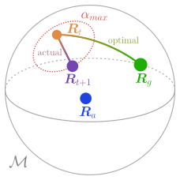
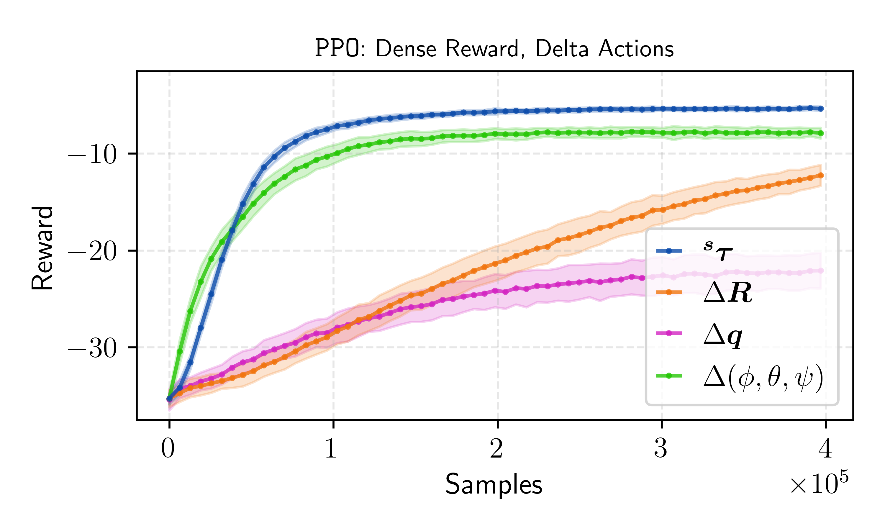
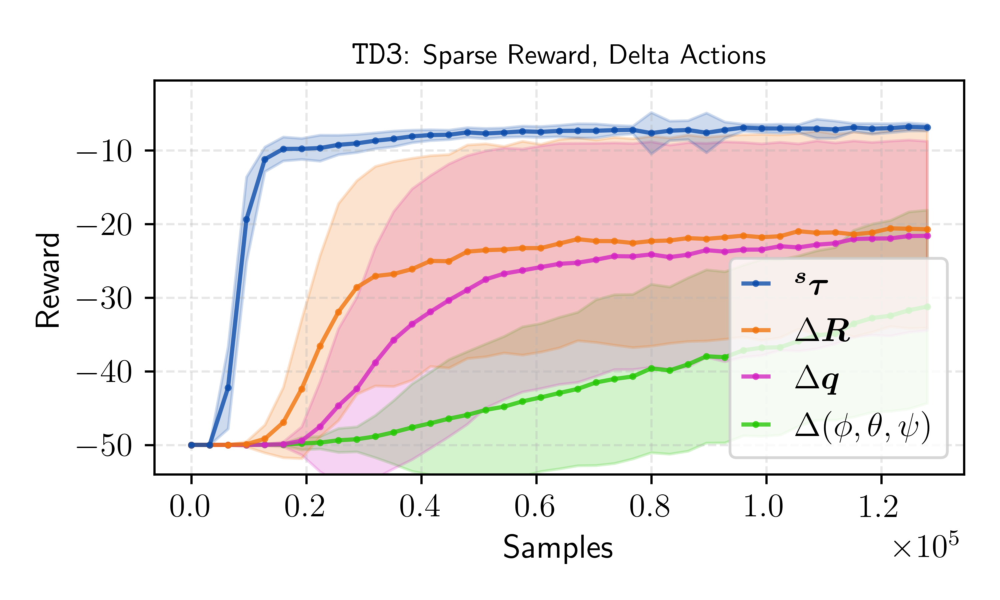
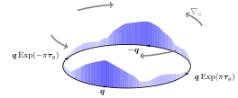
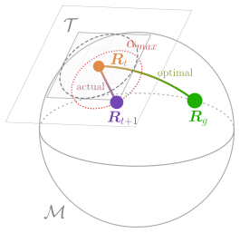
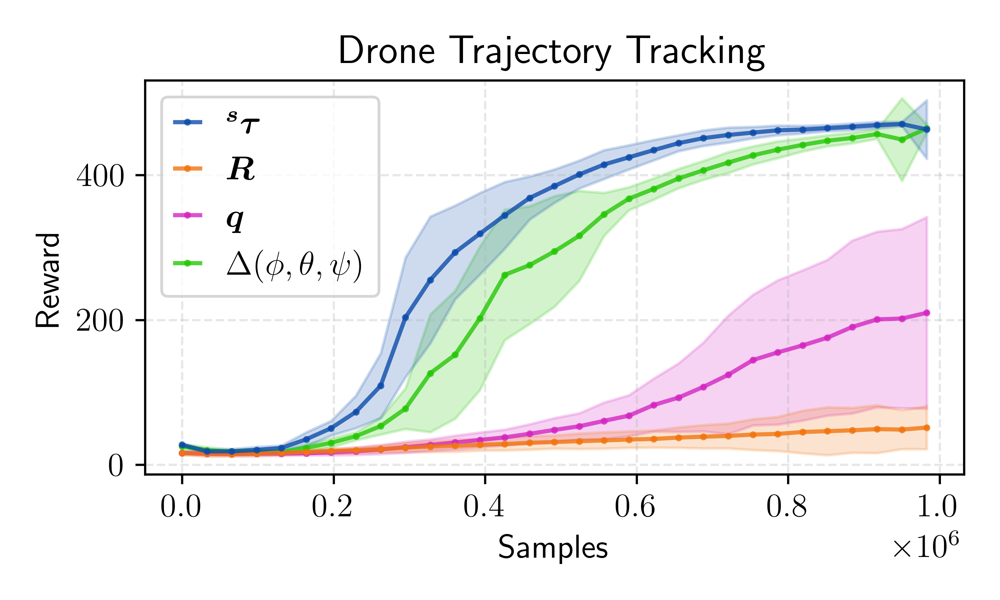
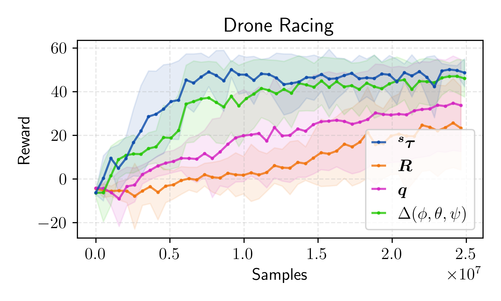
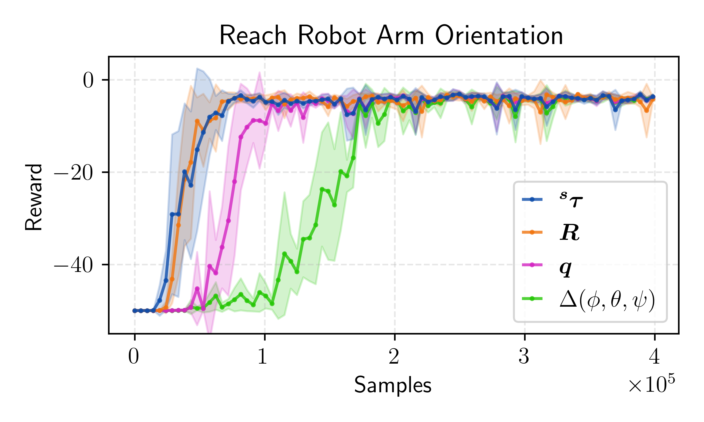
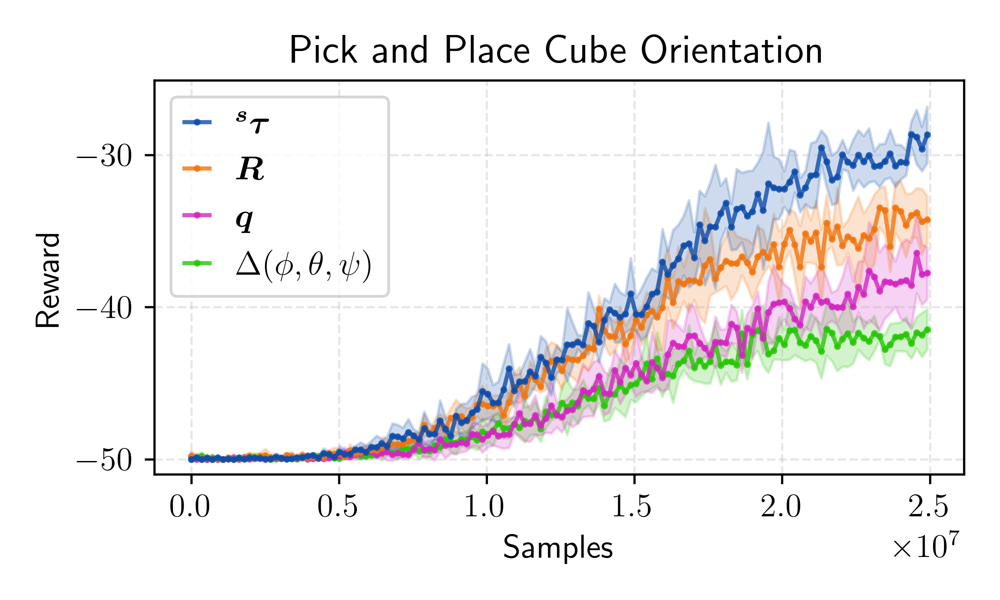
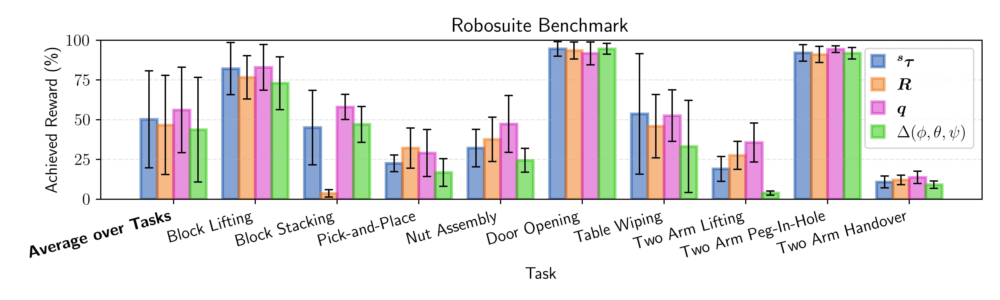

arXiv
arXiv
It's another day in the lab, and a student walks up to you asking for advice on how to control a robot arm
with an RL agent. The position can be handled with deltas in Cartesian space, but what about the orientation?
They thought about using Euler angles, but these have gimbal lock issues. Also, surely smooth representations
are better for learning, so maybe quaternions? Then again, quaternions double-cover SO(3) and thus are not
unique, which could lead to conflicting gradients. Maybe rotation matrices, since they are unique? But isn't
that a lot of dimensions to learn for just 3 degrees of freedom? And wasn't somebody saying tangent vectors
(i.e. axis-angles) are best?
Each choice comes with different trade-offs, and while there are excellent papers on these representations for
supervised learning tasks [1], nobody has systematically investigated which
one
works
best for actions in reinforcement learning. This matters because your choice doesn't just
affect how
the network outputs rotations—it fundamentally shapes how the agent explores, how entropy regularization
behaves, and ultimately how well your policy learns. We ran the experiments for PPO, SAC and TD3 to figure out what actually works, and link the performance to theoretical
intuitions often mentioned when reasoning about rotation representations.
An Idealized Experiment

To really understand how rotation representations affect learning, we need to isolate the problem. So we built the simplest possible environment: an agent that only controls orientation, with orientation as the only state. Think of it as a floating gyroscope that just needs to rotate into target orientations. Each episode, the agent starts at some random orientation and gets assigned a random goal orientation. It can rotate at most αmax radians per step, taking the shortest path toward whatever orientation it commands.
This setup let us run a lot of experiments. We tested all major representations (rotation matrices, quaternions, Euler angles, and tangent vectors) across three popular RL algorithms (PPO, SAC and TD3 ), using both global and delta action formulations, and each with dense and sparse rewards. That's a lot of combinations, and the idealized environment made it feasible to thoroughly explore the design space.
Key Findings and Recommendations
TLDR: Use tangent vectors (i.e. axis-angles) in the local frame
- Default choice: Delta tangent vectors in the local frame. Scale outputs to the range of permissible rotations.
- Dense rewards help: Continuous feedback can mask representation issues. Sparse rewards amplify differences.
- For unstable systems (e.g. drones): Tangent vectors remain the best choise. If using matrices/quaternions, use delta actions and unit-centering. For limited operation ranges, Euler angles can be viable.
- Fixed target poses: If your task involves reaching fixed target poses (not relative positioning), matrices or quaternions in the global frame may match or beat deltas.
- Avoid Euler angles for general tasks: Delta Euler angles work for small rotations but degrade as coverage of SO(3) increases.
Example Training Curves
We show a few representative training curves from our idealized rotation environment to illustrate the performance differences between representations. Mind that we only vary the action representation here. Everything else (algorithms, dynamics etc.) is kept constant. Hyperparameters are optimized per representation to ensure a fair comparison. The full comparisons are available in the paper.

Explaining the Results
Distribution warping
Most RL algorithms rely on sampling exploration noise from a simple distribution (e.g. Gaussian) in the action space. Algorithms like PPO rely on small initial logstandards to encourage local exploration. However, Gaussian noise in the raw action space gets heavily distorted when projected onto SO(3).
Here we show how the same Gaussian noise limited to [-1, 1] with a Tanh activation and projected onto SO(3) leads to very different distributions of rotations for different action spaces. This explains e.g. why quaternions and rotation matrices perform poorly at initialization: the noise is nearly uniform across the representation space, leading to chaotic exploration.
Tangent (Local Frame)
Rotation Matrix
Quaternion
Euler Angles
Note: Ideally, we would visualize quaternions on a 4D sphere (S³), but since this is impossible to directly visualize, we instead show the resulting SO(3) samples in axis-angle (tangent) space for all representations.
Conflicting gradients for multi-covers
One intuition behind avoiding quaternions is their double-cover property: each rotation corresponds to two antipodal points on the 4D unit sphere. Unfortunately, the double-cover quaternion is antiparallel in Euclidean space, driving network outputs in the exact opposite direction. This can lead to conflicting gradients during learning.
But does this actually happen in practice? If the critic doesn't learn that both quaternions are valid solutions, we would never see conflicting gradients. To investigate this, we visualize the Q-values predicted by a trained SAC critic for actions interpolating from the optimal quaternion action to its double-cover and back. As can be seen, the critic correctly learns to assign both quaternions high Q-values with a dip in between, which indeed leads to conflicting gradients for the actor and explains why quaternions are a suboptimal action representation.

Misguided entropy regularization
The action noise distribution shown above directly leads to another problem. While we regularize the entropy of the action distribution in Euclidean space, the resulting distribution on SO(3) can look very different. Distributions with more entropy in Euclidean space (large σ) can actually have less entropy on SO(3) than more concentrated distributions (small σ). For many representations, the bonus drives the policy towards select actions with larger magnitudes, which causes jittery behavior and poorer exploration.
Limiting actions
Physical systems cannot rotate arbitrarily fast. Thus, we can often limit the action space to a maximum rotation angle per timestep (αmax, red circle). But how do we scale different representations to this limit? We cannot remap quaternions or rotation matrices without loosing their smoothness properties. Euler angles can be scaled, but the scaling non-linearly dependents on the current state.
Tangent vectors (axis-angles) on the other hand naturally scale with rotation magnitude, making it straightforward to limit actions. You can see the idea in the figure below. Multiplying your bounded axis-angle actions (outer gray plane) by αmax limits the maximum rotation to almost the real action limit of αmax (inner gray plane). While some edges remain outside the limit (compare the corners of the inner gray plane to the gray circle representing the action limit projected onto the tangent space), these do not cause issues in practice.

Benchmarks
Drone Control
Drone control is an interesting test case because attitude control is a typical interface type, and because the unstable dynamics add complexity beyond our idealized environment. We evaluate on two tasks, trajectory tracking and drone racing, using Crazyflow as simulator.

Goal-Conditioned Manipulation
Our second benchmark modifies the popular Fetch environments from OpenAI with orientation goals, testing two tasks: reaching a target pose and picking and placing an object at a target pose.

Robot Manipulation (RoboSuite)
